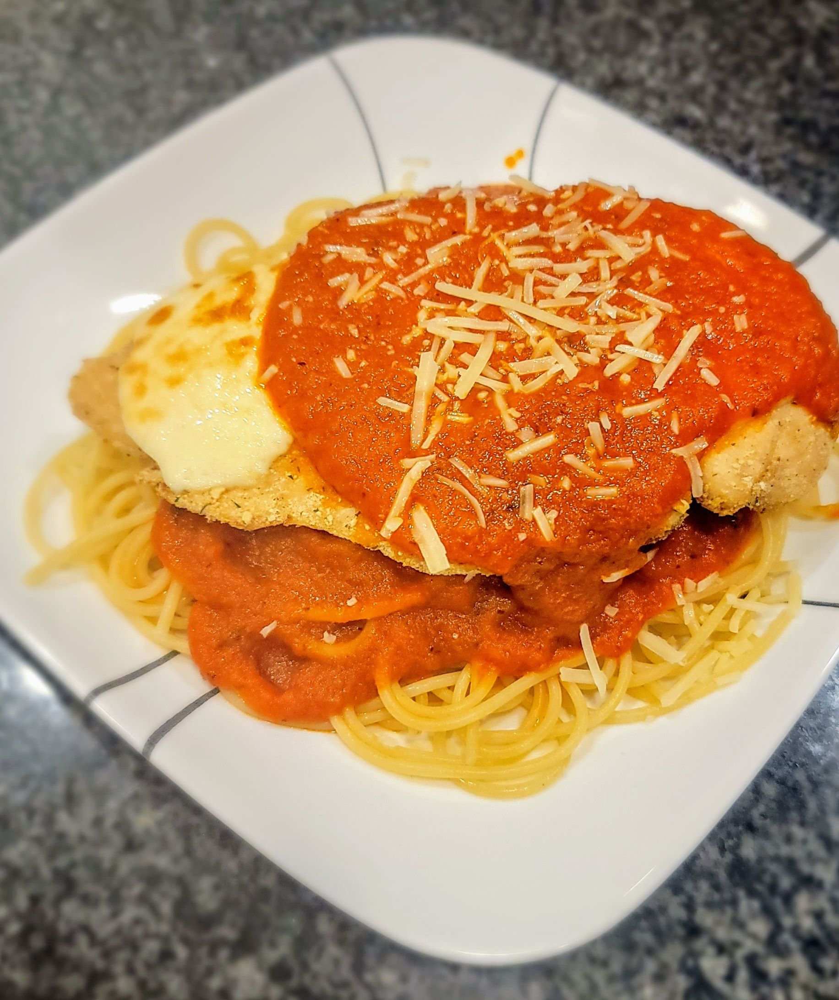

Easy Air-Fryer Chicken Parmesan

Description
If you don't have a lot of time for dinner, why not try this?
As Tom Haverford would say, "This chicky-chicky parm-parm is crack-a-lackin'!
Ingredients
- 2 chicken breasts
- 1 cup Italian Bread crumbs (or 1 cup bread crumbs mixed with Italian seasoning)
- 2-4 slices fresh mozzarella
- 1-2 cups of marinara sauce
- 2 cups cooked pasta or rice (optional)
- shredded parmeson for topping
- salt and pepper
Steps
- Pound the chicken breasts out with a meat mallet, a hammer, or the floor. Should be 1/2in thick max. Salt and pepper the chicken and let it rest for a bit.
- Pour the breadcrumbs onto a plate and dredge your chicken through the crumbs until both sides are completely covered.
- Put your breasts into the air fryer at 350 for seven minutes. After seven minutes, flip the chicken and fry for an additional five minutes.
- If serving with pasta or rice, add a little sauce on top of the pile o' carbs. Serve chick atop the carbs and cover with more sauce. Top with parm and serve!
Credit
This recipe can be found at its original site here